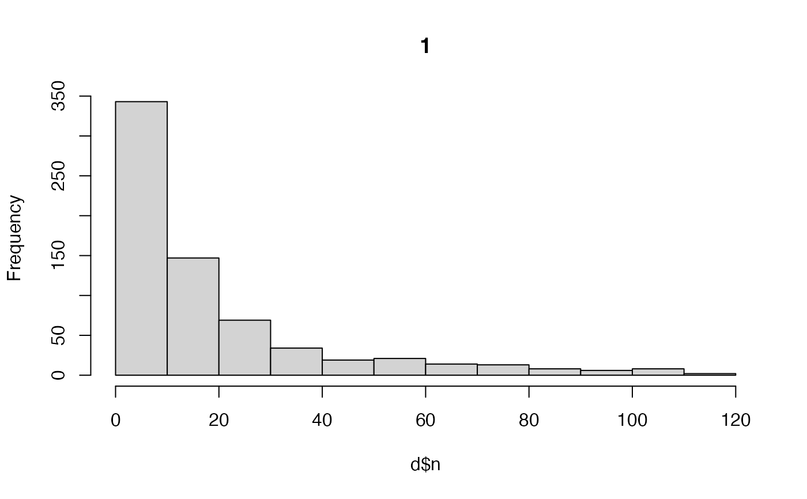

This function calculates centres of activity (COAs) from detections at acoustic receivers.
coa(
.dlist,
.delta_t,
.split = NULL,
.plot_weights = TRUE,
...,
.one_page = TRUE
)Arguments
- .dlist
A named
listof data and parameters frompat_setup_data(). This function requires:.dlist$data$acoustics, with the following columns:receiver_idandtimestamp;.dlist$data$moorings, with the following columns:receiver_id,receiver_xandreceiver_y;.dlist$pars$lonlat, which specifies the coordinate format (longitude/latitude or planar);
- .delta_t
The time interval over which to calculate COAs. This can be specified in any way understood by
cut.POSIXt()(see thebreaksargument).- .split
(optional) A
characterthat defines the name of the grouping factor in.dlist$data$acoustics(e.g.,individual_idfordat_acoustics).- .plot_weights, ..., .one_page
Plot arguments.
.plot_weightsis alogicalvariable that defines whether or not to plot the frequency distribution of weights for each.splitvalue (i.e., the frequency distribution of the number of detections at each receiver in each time interval, excluding time intervals without detections)....is a placeholder for arguments passed tographics::hist()..one_pageAlogicalvariable that defines whether or not to plot all histograms on one page.
Value
The function returns a data.table with the following columns:
.split---acharactervector that distinguishes groups, if applicable;timestamp---aPOSIXtvector of time stamps;coa_x,coa_y---the coordinates of the COAs;
Data are arranged by .split and timestamp.
Details
COAs are calculated as a weighted mean of the locations of receivers at which individuals are detected over consecutive time intervals, weighted by the frequency of detections at each of those receivers. COAs are calculated via stats::weighted.mean() (for planar coordinates) or geosphere::geomean() (for longitude/latitude coordinates).
This function replaces flapper::coa(). See flapper::coa_setup_delta_t() to evaluate alternative time internals.
See also
To derive location samples from the forward-filter backward-sampler, see
pf_forward(),pf_backward_sampler()andpf_coord();For mapping utilisation distributions from coordinates, see
map_*()functions (i.e.,map_pou()andmap_dens();
Examples
require(data.table)
#### Example (1): Calculate COAs for an example individual
acc <- dat_acoustics[individual_id == dat_acoustics$individual_id[1], ]
gebco <- dat_gebco()
dlist <- pat_setup_data(.acoustics = acc,
.moorings = dat_moorings,
.bathy = gebco,
.lonlat = FALSE)
coa(dlist, .delta_t = "2 hours")
#> timestamp coa_x coa_y
#> 1: 2016-03-17 01:00:00 709176.9 6253068
#> 2: 2016-03-17 03:00:00 708972.9 6252945
#> 3: 2016-03-17 05:00:00 709304.6 6253132
#> 4: 2016-03-17 07:00:00 709396.0 6253168
#> 5: 2016-03-17 09:00:00 709408.8 6253174
#> ---
#> 758: 2017-05-31 21:00:00 702947.7 6266212
#> 759: 2017-05-31 23:00:00 703028.5 6266293
#> 760: 2017-06-01 01:00:00 703042.1 6266307
#> 761: 2017-06-01 03:00:00 703042.1 6266307
#> 762: 2017-06-01 05:00:00 703042.1 6266307
coa(dlist, .delta_t = "4 hours")

#> timestamp coa_x coa_y
#> 1: 2016-03-17 01:00:00 709048.6 6252991
#> 2: 2016-03-17 05:00:00 709336.7 6253145
#> 3: 2016-03-17 09:00:00 709408.8 6253174
#> 4: 2016-03-21 21:00:00 709242.1 6253107
#> 5: 2016-03-22 05:00:00 709242.1 6253107
#> ---
#> 554: 2017-05-30 21:00:00 702847.0 6266057
#> 555: 2017-05-31 17:00:00 702999.3 6266264
#> 556: 2017-05-31 21:00:00 702971.1 6266236
#> 557: 2017-06-01 01:00:00 703042.1 6266307
#> 558: 2017-06-01 05:00:00 703042.1 6266307
#### Example (2): Calculate COAs for multiple individuals via .split
dlist <- pat_setup_data(.acoustics = dat_acoustics,
.moorings = dat_moorings,
.bathy = gebco,
.lonlat = FALSE)
#> Multiple individuals detected in acoustic data.
#> Acoustic time stamps should be ordered chronologically.
coa(dlist, .delta_t = "6 hours", .split = "individual_id")
#> individual_id timestamp coa_x coa_y
#> 1: 25 2016-03-17 01:00:00 709120.1 6253030
#> 2: 25 2016-03-17 07:00:00 709398.4 6253169
#> 3: 25 2016-03-21 19:00:00 709242.1 6253107
#> 4: 25 2016-03-22 01:00:00 709242.1 6253107
#> 5: 25 2016-03-22 07:00:00 709242.1 6253107
#> ---
#> 1216: 35 2017-04-10 05:00:00 708275.5 6252874
#> 1217: 35 2017-04-10 17:00:00 708772.1 6253272
#> 1218: 35 2017-04-11 23:00:00 707000.4 6253868
#> 1219: 35 2017-04-12 17:00:00 708771.2 6253210
#> 1220: 35 2017-04-19 23:00:00 707242.1 6253707
#### Example (3): Use lon/lat coordinates
gebco_ll <- terra::project(dat_gebco(), "EPSG:4326")
dlist <- pat_setup_data(.acoustics = dat_acoustics,
.moorings = dat_moorings,
.bathy = gebco_ll,
.lonlat = TRUE)
#> Multiple individuals detected in acoustic data.
#> Acoustic time stamps should be ordered chronologically.
#> `.moorings` coordinates coerced onto `.bathy` grid.
coa(dlist, .delta_t = "6 hours", .split = "individual_id")
 #> individual_id timestamp coa_x coa_y
#> 1: 25 2016-03-17 01:00:00 -5.612719 56.37542
#> 2: 25 2016-03-17 07:00:00 -5.607875 56.37639
#> 3: 25 2016-03-21 19:00:00 -5.610413 56.37602
#> 4: 25 2016-03-22 01:00:00 -5.610413 56.37602
#> 5: 25 2016-03-22 07:00:00 -5.610413 56.37602
#> ---
#> 1216: 35 2017-04-10 05:00:00 -5.626653 56.37486
#> 1217: 35 2017-04-10 17:00:00 -5.618533 56.37788
#> 1218: 35 2017-04-11 23:00:00 -5.647482 56.38423
#> 1219: 35 2017-04-12 17:00:00 -5.618795 56.37726
#> 1220: 35 2017-04-19 23:00:00 -5.644054 56.38298
#> individual_id timestamp coa_x coa_y
#> 1: 25 2016-03-17 01:00:00 -5.612719 56.37542
#> 2: 25 2016-03-17 07:00:00 -5.607875 56.37639
#> 3: 25 2016-03-21 19:00:00 -5.610413 56.37602
#> 4: 25 2016-03-22 01:00:00 -5.610413 56.37602
#> 5: 25 2016-03-22 07:00:00 -5.610413 56.37602
#> ---
#> 1216: 35 2017-04-10 05:00:00 -5.626653 56.37486
#> 1217: 35 2017-04-10 17:00:00 -5.618533 56.37788
#> 1218: 35 2017-04-11 23:00:00 -5.647482 56.38423
#> 1219: 35 2017-04-12 17:00:00 -5.618795 56.37726
#> 1220: 35 2017-04-19 23:00:00 -5.644054 56.38298